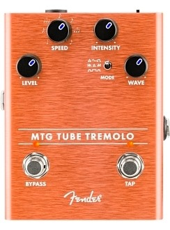
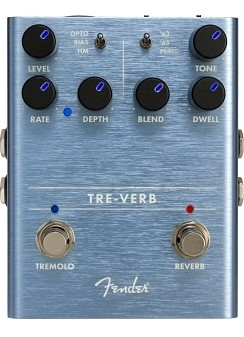
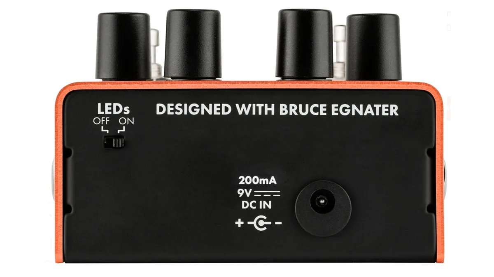

The name Fender is synonymous with real tube tone. The MTG Tube Tremolo brings the hypnotic sound typically found in vintage amps and conveniently places it into a stomp box based around a genuine, U.S. made NOS 6205 preamp tube. The pedal features Level, Intensity, and Speed controls, three oscillator wave shapes, and a dedicated tap tempo foot switch which allows access to various note subdivisions.
Designed by Fender's in-house team of experts, the MTG Tube Tremolo is an all-original Fender circuit. The chassis is crafted from lightweight, durable anodized aluminum, and the amp jewel LED gives your pedal board an unmistakably Fender look. The switchable LED back-lit knobs ensure you can adjust your control settings on a dark stage.
Co-designed by Fender’s Stan Cotey and amp guru Bruce Egnater – as are all models in the MTG line – the Tube Tremolo brings a high degree of control and flexibility to what could be the oldest electronic effect in the history of guitar sound modifiers.
Tremolo has typically involved tube circuitry (at lease in guitar amplifiers), so it’s fitting that the Tube Tremolo incorporates a NOS American-made 6205 tube, which is gripped on a small PC board that’s affixed to the main glass-epoxy board carrying the majority of the circuit components.
The metal enclosure is comprised of an orange-color anodized-aluminum upper section with a steel bottom plate, and it comes apart easily after removing four machine screws.
Besides input and output jacks, there is a 2.1mm jack for the nine-volt power supply of your choice (200mA minimum), as well as a small recessed switch on the front that lets you turn on or off the blue-lighted indicators on the knobs.
For some reason the indicator on the intensity knob wasn’t working, but it was no big deal, and the warranty would cover it. The bypass and tap foot switches have amber LEDs, and the latter blinks in time with the tempo, which can be set with the tap button or the speed control.
Furthermore, pressing and holding the tap switch while turning the speed knob supposedly allows you to select between seven different beat subdivisions: quarter note, dotted eighth, quarter-note triplet, eighth note, dotted sixteenth, eighth-note triplet and 16th note.
I went through all of the selections (which are labeled on the speed control) without finding anything that sounded subdivided, so I wasn’t sure if the pedal had a problem or I was missing something.
As it happened, Fender explained that we somehow received a very early unit before the software features were completed. The subdivision function does indeed work and will produce any of the subdivided values from a quarter-note tap.
One of the key features of the Tube Tremolo is the mode switch, with its three distinct settings – triangle/sine/square, ramp/triangle/sawtooth and adjustable square wave.
These, in combination with the wave control, make it possible to get a broad range of tremolo textures, from smooth sine-wave pulse to staccato square-wave effects and all points in-between.
Tested with a Fender Deluxe Reverb, which has a nice-sounding trem to compare with, the TT was easily adjusted to cop that type of smoothly rounded volume modulation by using the triangle/sine/square position with the wave knob set a little south of halfway and the intensity at around noon.